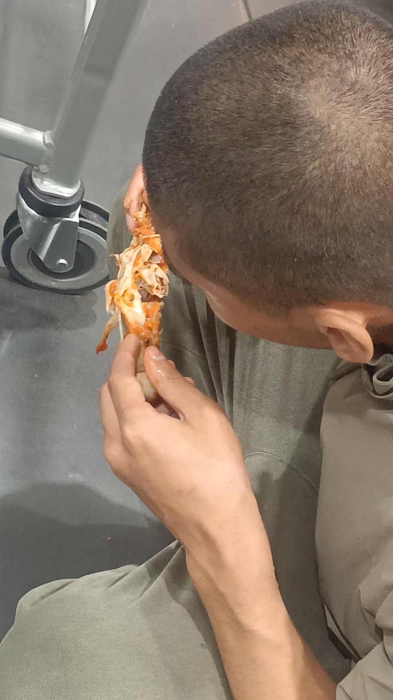

20260525大日如来灌顶真言
民间文化风水布局 原始对话记录昨晚，当地那学生喝多了
跟我看到的外空间喝酒一样，有魔头小妖喝醉了
喝酒的人，是说喝好了，
把人陪醉了，是招待的好
打车不知道去哪里了，又跟他在汇金街路边摊吃，一直到醒酒
喝的太急了，一人一斤，菜还没动，酒没了
酒好，一会就吸收了
今天所有学生离开
一会，那个怪病不会走路，让我治好了的姐弟两个过来，不下雨的话，明后两天应该在渤海港钓鱼
陪孩子玩
转眼十九岁了
见到我第八天就能扶着椅子走路
那时候，我就说，天下只有我能治
北京上海各种化验单，花了十几万，查不出原因
那时候很矮小，我说，五年后，健壮，身高超过他父亲
果然，现在比他父亲高多了
我最喜欢挑战怪病
一家遭劫
那一年，他爸前列腺炎，比较严重，她妈子宫肌瘤动了手术，女孩严重抑郁，男孩突然就不会走了
现在好了，家里盖了新房子，楼房设计，花了差不多四十万
那一年疫情，村里的人都不让我收留他们，怕传染病
在我家小楼上住了近两个月
我就为挑战怪病，到现在为止分文不收
差不多贴上了几万块
姐弟两个学习年年第一，奖状满墙都是
爷爷爸爸都是工人，
第二年，我问，你们村是不是有一个龅牙
应该是大仙
说是东邻居
我断定，是这个人施了邪法，把这一家人给咒了
嫉妒他家过的好
不一个城市，我也没去过，脑海里查出这么个人
一家人深信不疑
我说我上去把那龅牙告了
那人将会癌死
@紫鸢真人 师父你厉害，功德无量[强][强][强]
第四年，龅牙脖子查出什么癌，很快就死了
不死，咒怨解不了，这家人也好不了
那些施法术的人超恶毒
我遇见一个，害的人家破人亡
我不出手，惩戒，免得惹祸上身，但我可以找他供的师傅，供的要是邪的，我就上告，让神仙处理
高明
所以法术不轻传
在世间，人与人之间，没有那么友善，得罪了就害人家，最终害自己
总会有更高的人管
真人我问个问题，不是举头三尺有神明，不告神仙就不知道了吗，神仙就不管了吗，如果是神仙，下面人作乱都不知道，还叫什么神仙？
[呲牙][呲牙][呲牙]
人遭劫，也是个人因果
集了功德，有神明护佑，贵人来临
不信仰，神仙也不会出面
人没有一个顺利的，就是因为祖先，父母，自己做的业，生成的因果业障，形成干扰
有人做官，财大都是祖先积德
人经历了劫难，才能醒悟
不醒悟，就继续在人间坑坑坎坎
并不是说神佛就是助人为乐
还有一种煞叫神佛煞
就是缺了供奉，或者直接辱骂神佛，被神佛揍，
平时最常见的就是动了太岁土，或者三煞土
破财，伤人
就像这家人，孩子都是年年第一，但不信仰，考第一是爷爷奶奶善良的福分，爸妈就不信了
学习越好，越要给文昌魁星供奉
这样，缺了供奉，福分消耗完了，文昌魁星就不帮了
两孩子都得怪病
学业也没了
山姆还真会赚钱
260会员卡
不能消费
这不是白赚的吗
谁家孩子病好了能不开心呢
我只管开车，吃住算他们的，
也算一点感恩之心吧
炸鸡腿

五年来，这孩子怕生
吃了我，所有亲戚都不见
今年行了
主要是，改了宅子运势，
所有家人都好了
一个只留了视频的题目
这个题目只留下一段视频。
正文记的是别的事。
昨晚，当地一个学生喝多了。师父说，跟他看到的外空间喝酒一样，有魔头小妖喝醉了。喝酒的人说喝好了，把人陪醉了，是招待得好。打车不知道去哪里了，又跟他在汇金街路边摊吃，一直到醒酒。喝得太急，一人一斤，菜还没动，酒没了。酒好，一会儿就吸收了。
第二天，所有学生离开。
一会儿，那对不会走路的姐弟过来了。不下雨的话，明后两天应该在渤海港钓鱼。师父陪孩子玩。转眼十九岁了。他说，见到他第八天就能扶着椅子走路。那时候他就说，天下只有我能治。北京上海各种化验单，花了十几万，查不出原因。孩子那时很矮小，他说，五年后，健壮，身高超过他父亲。果然，现在比他父亲高多了。
他说，我最喜欢挑战怪病。
真言本身，笔记里没有展开。倒是灌顶这件事，别处说得清楚。要学，必须经过考核，灌顶。免费的。不灌顶，不能盲修瞎练。另一处还记着，毗卢遮那佛、卢舍那佛，说的就是大日如来。
这一页，就停在两个字上：灌顶。